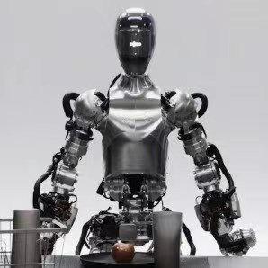

AI新闻
ChatGPT横空出世

虽然ChatGPT早在2022年就已经发布，但其真正走入全球视野却是在2023年。
2023年的AI叙事无疑始于ChatGPT的惊人崛起。 这款由OpenAI开发的免费聊天机器人迅速俘获了全球用户的心，从科技领袖到普通民众皆为之着迷。 ChatGPT初期仅基于文本输入进行交互，然而，随着GPT-4在3月的发布，AI的能力得到了显著提升，不仅创造性增强，还支持视觉输入，并能处理更长的上下文。 这一转变标志着AI能力的一个重大飞跃。
根据新闻报道，人工智能的进步在极大的影响着人类和社会，不论是益处还是坏处。 在最几近年，AI换脸成为公众热烈讨论的话题，有很多犯罪诈骗人员利用此技术骗了不少人。因为换脸的相似度极高，使大多人难以辨别，因而上当受骗。